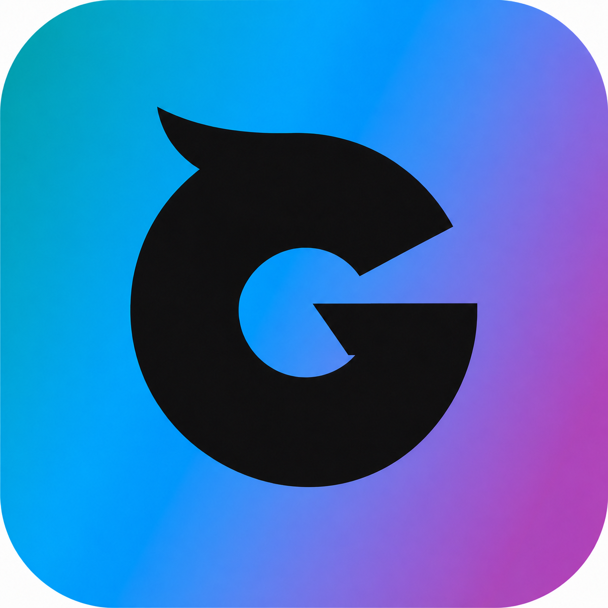
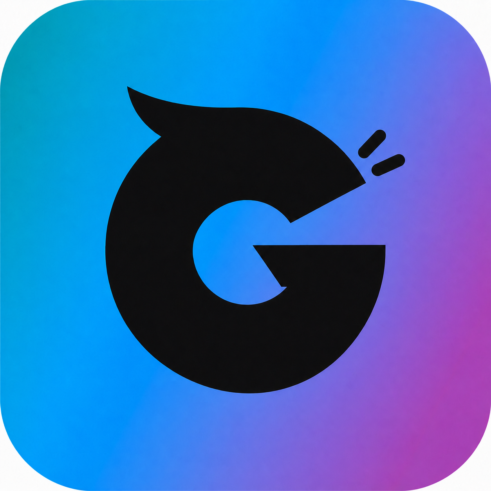
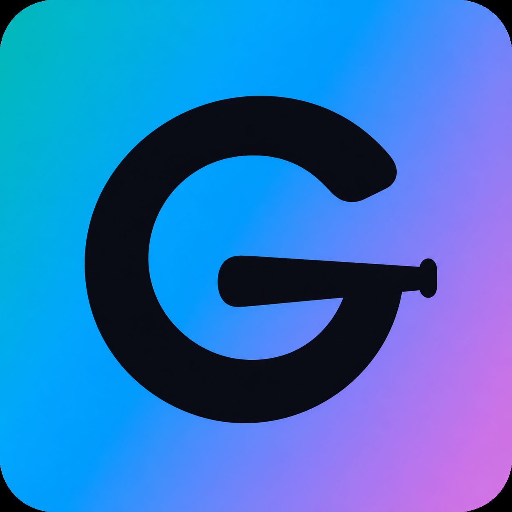
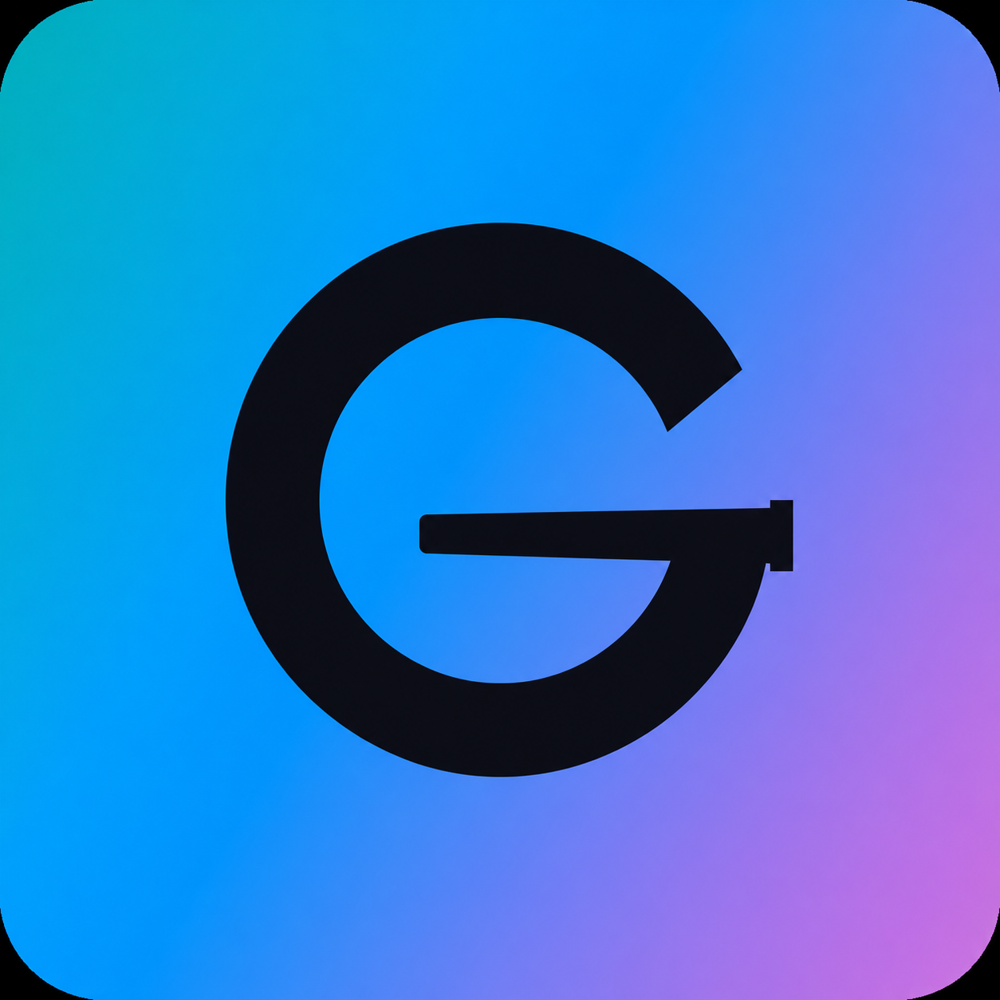
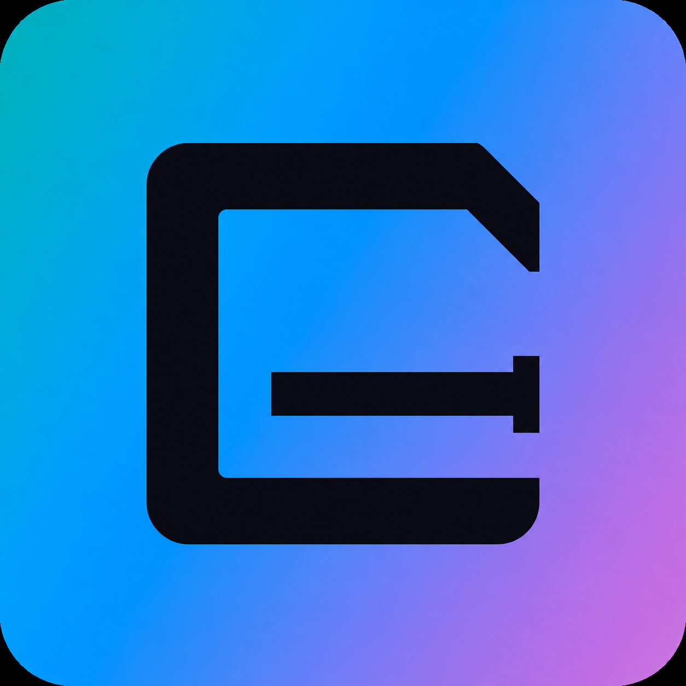
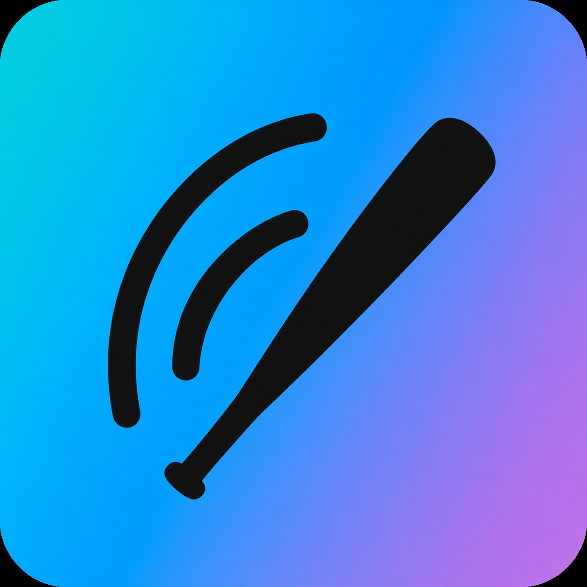
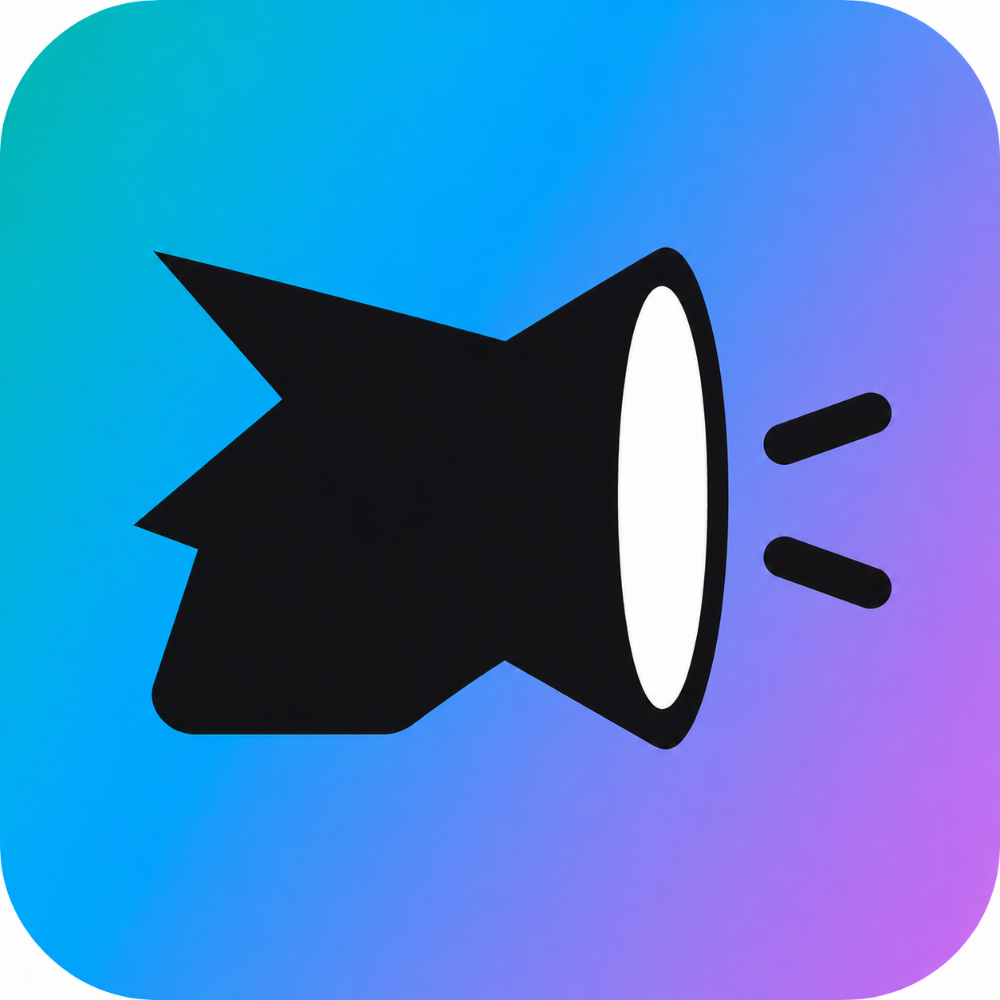
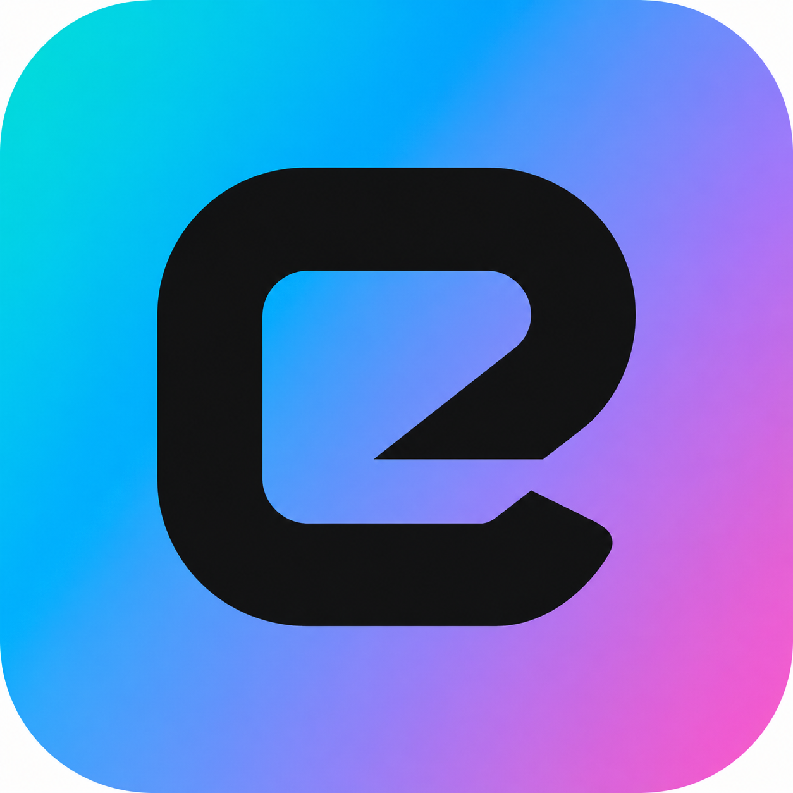

Charging G
保留第一版的厚重和前冲轮廓，去掉所有眼睛与表情。

64
32
16
pure mark
Gian / accent-aware icon study
这一轮不把渐变当装饰。底色直接复用 Gian 现有状态图标的
g1 / g2 / g3 系统，主标只用黑白。
这里是 warm theme 的真实 token；主标会作为单色层覆盖在这些底色上。
保留第一版的厚重和前冲轮廓，去掉所有眼睛与表情。

同一个 G 加两笔放声线，只提示爱唱歌，不画脸。

把 G 的横杠收成球棒，先读成字标，再发现棒球。

保留球棒横杠，把外轮廓收成等粗圆环与利落切口。

把 G 做成窗口式方环，球棒成为更克制的第二层线索。

一根球棒和两条弧线，同时读成挥棒轨迹与声波。

纯扩音器轮廓，不画人物，也不使用任何表情。

不引用角色爱好，只留轮廓、负空间和前进切口。
